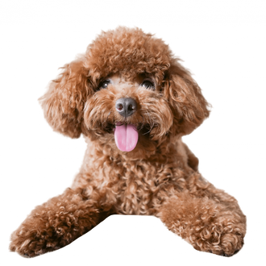

El caniche es una raza canina que hasta el siglo XV se
consideró de uso exclusivo de los aristócratas y nobles.
Fue un perro cobrador de aguas hasta el Renacimiento:
recuperaban las presas ya cazadas que habían caído al
agua, como patos y cisnes.
